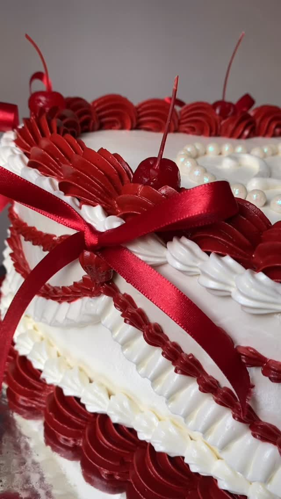
Corazón rojo
Un pastel de corazón con detalles rojos y moños.
Pasteles, postres y diseños para celebrar. Explora las 24 publicaciones de esta selección y abre cada una en Instagram.
24 publicaciones

Un pastel de corazón con detalles rojos y moños.

Pastel de boda de tres pisos con flores blancas.
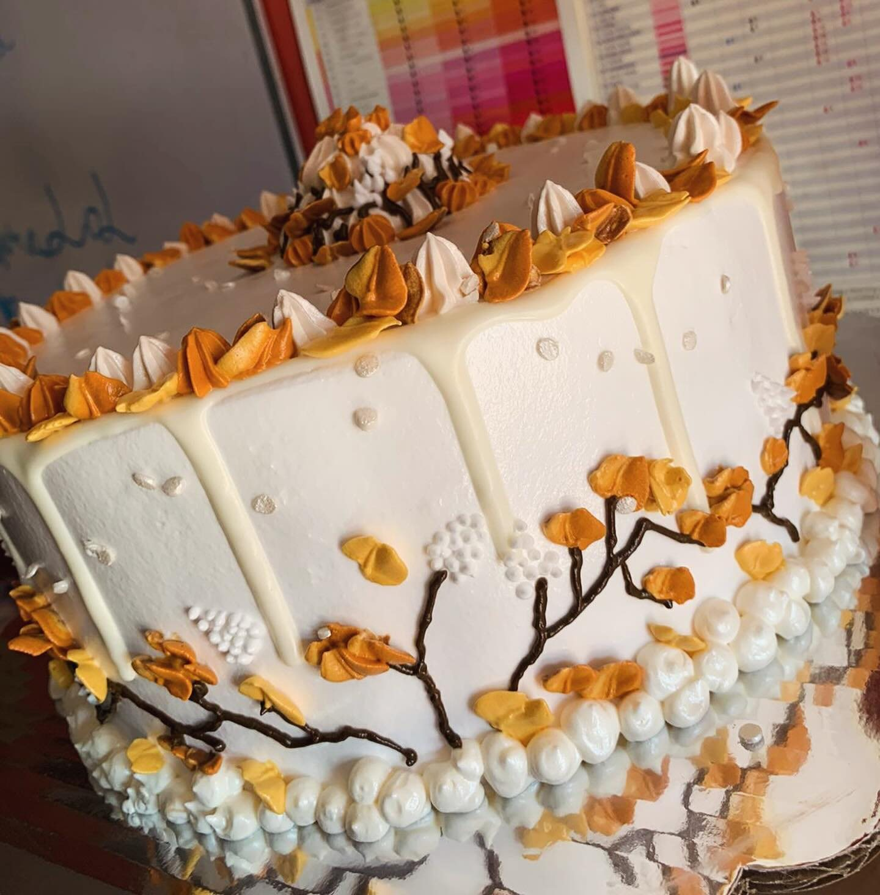
Un diseño inspirado en los tonos del otoño.

Un pastel alargado para una celebración especial.
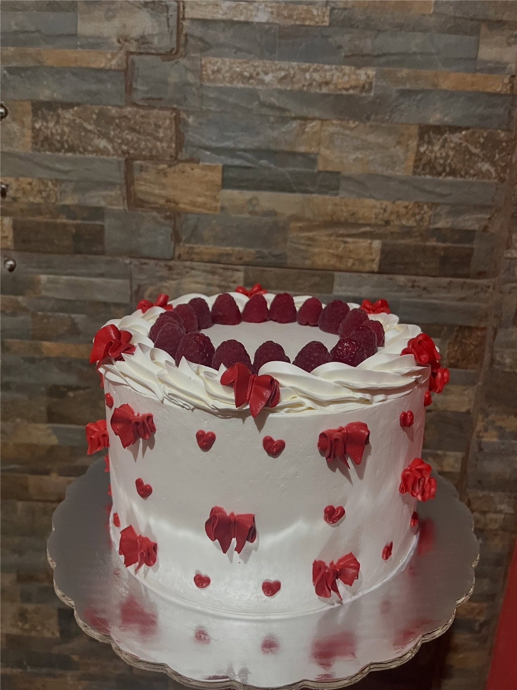
Pastel blanco con corazones rojos para celebrar.
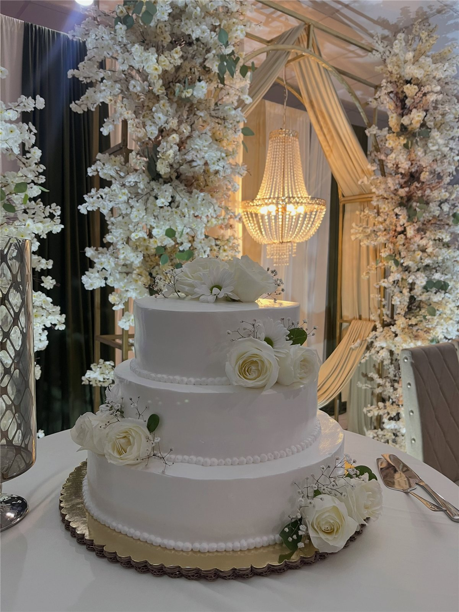
Un pedido de tres pisos con detalles florales.

Un pastel de corazón en rosa para recibir un nuevo año.
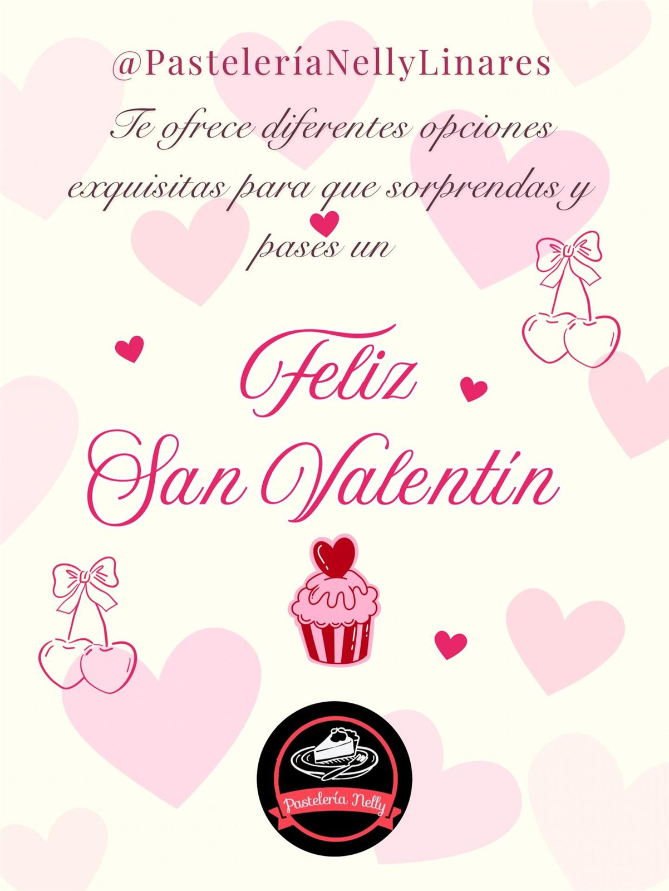
Una publicación del catálogo de San Valentín.
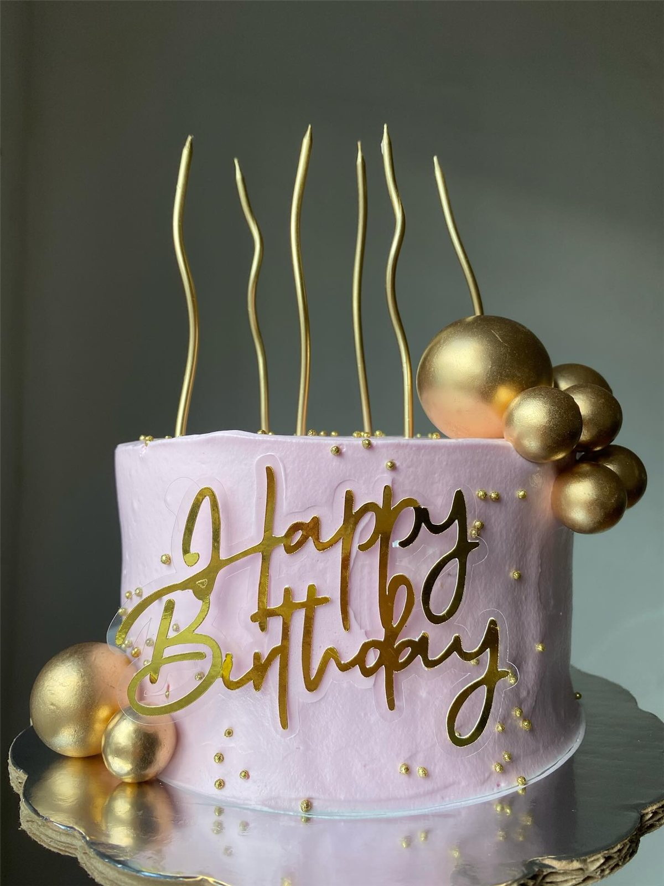
Detalles en rosa y dorado para un cumpleaños.
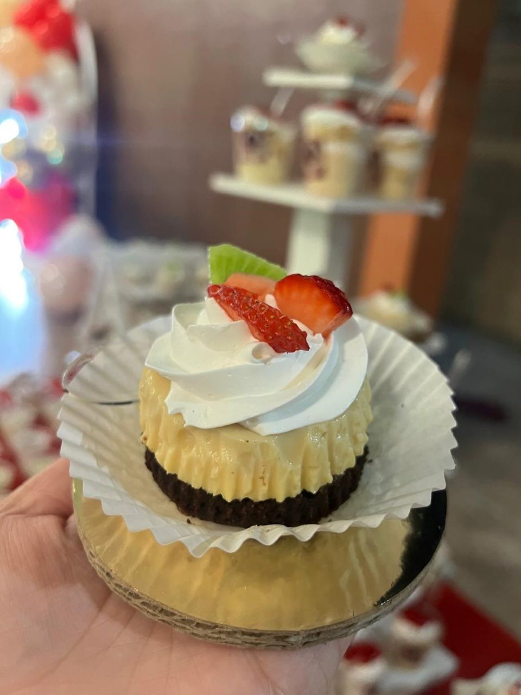
Una idea para acompañar tus eventos con postres.
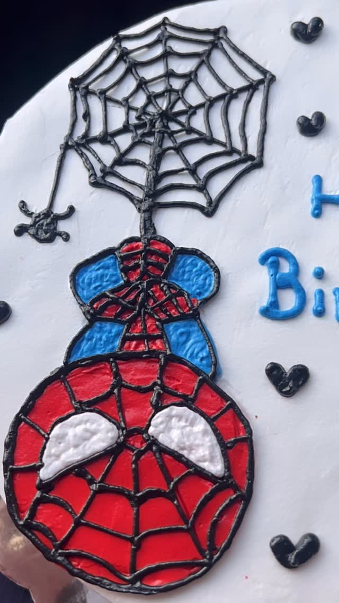
Un pastel temático inspirado en Spiderman.

Mostachón de fresa con betún de queso crema.
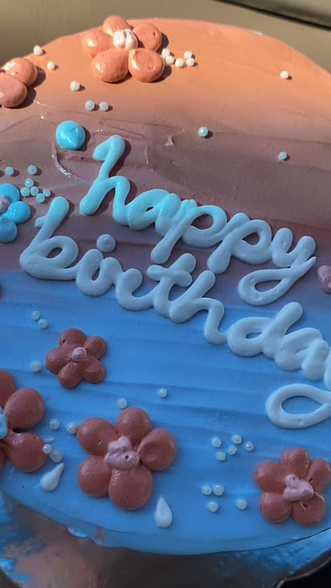
Un diseño de cumpleaños con flores y moños.

Otro detalle del pastel de corazón rojo.
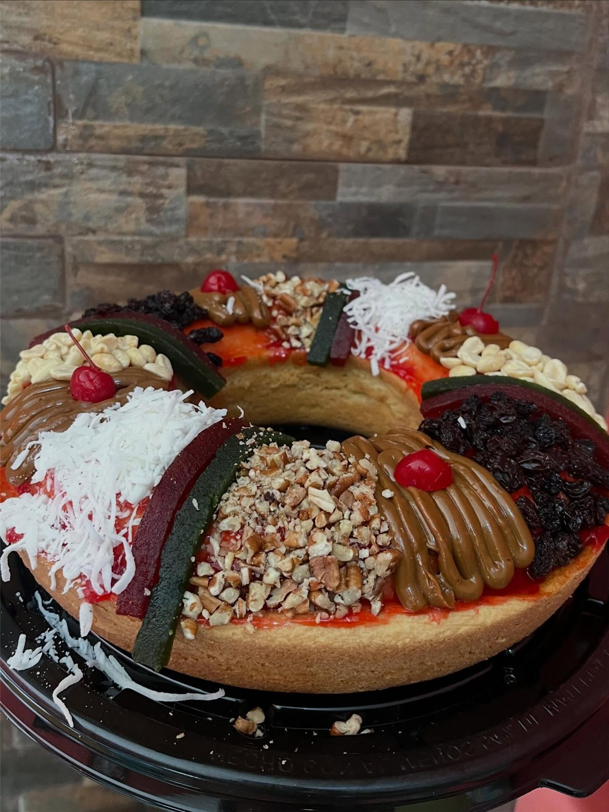
Roscas tradicionales y glaseadas, en tamaños chico y grande.
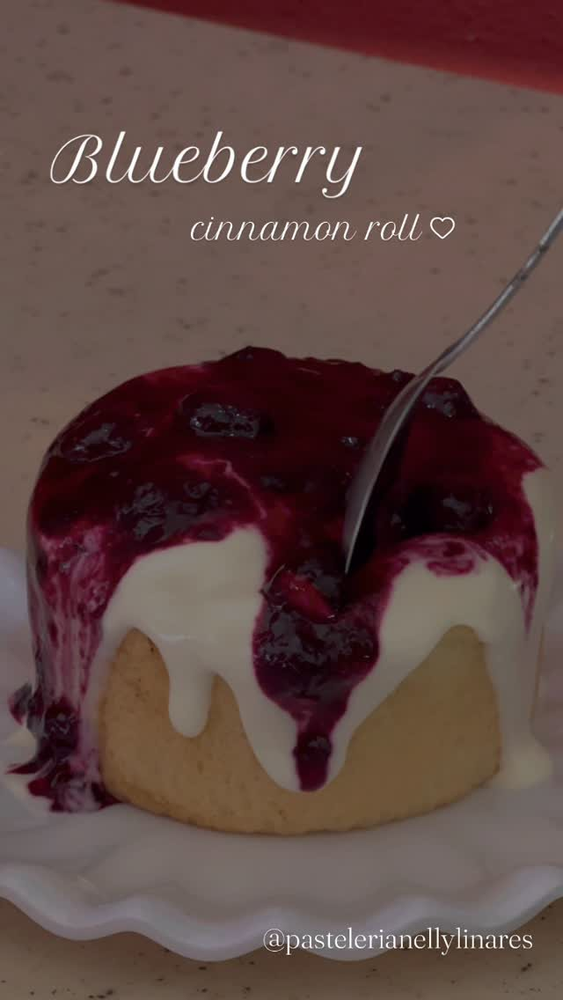
Rol de canela con blueberries.
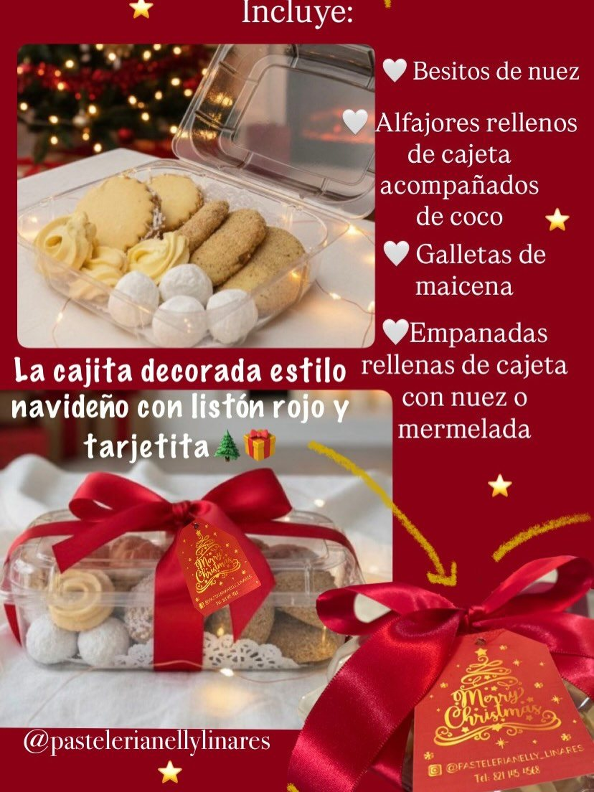
Una publicación del menú navideño.
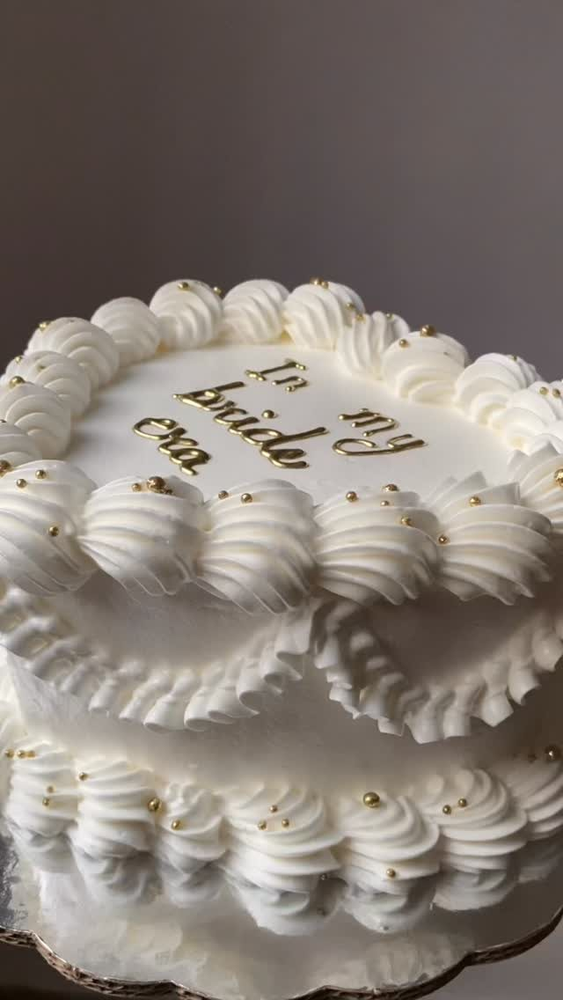
Un pastel para celebrar la etapa de novia.

Un pastel blanco con moños en tonos rosa y lila.

La combinación de tres leches con flan.
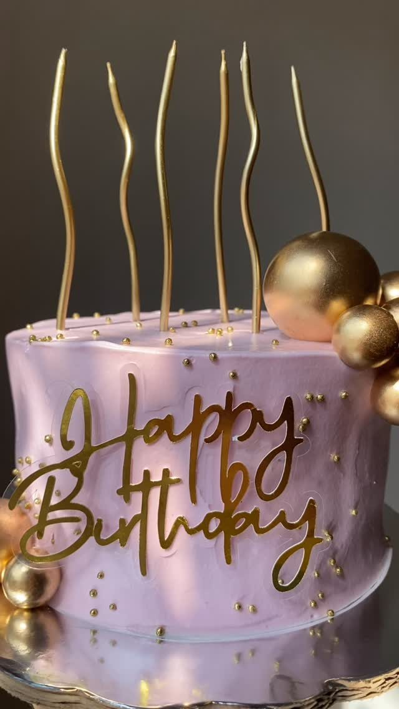
Un diseño de cumpleaños en rosa con detalles dorados.

Blanco, negro y un moño para un cumpleaños.

Un pastel de cumpleaños con corazones rosas.

Roles de canela y sus distintas combinaciones.
Estas publicaciones son referencias de diseños y productos. Consulta disponibilidad y opciones de temporada por DM. Los reels se muestran con su imagen de portada; puedes ver el video en Instagram.
Cuéntanos qué tienes en mente. Escríbenos por Instagram para consultar diseños y disponibilidad, y hacer tu pedido.